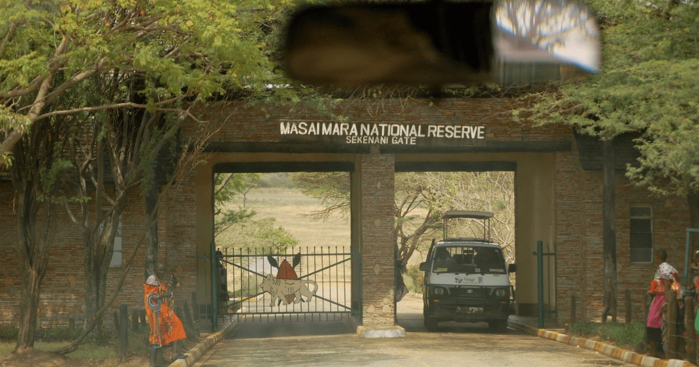
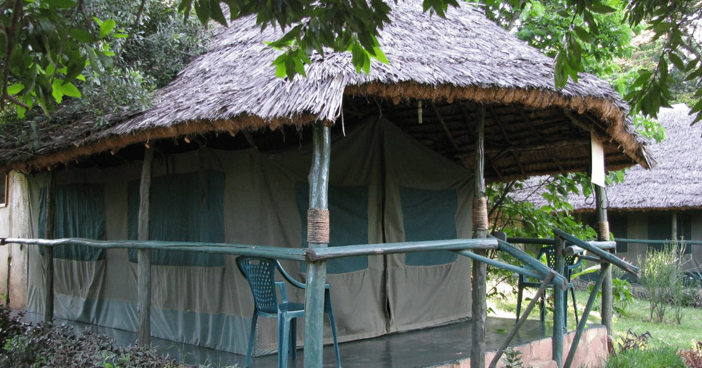

- +254 740 596771
- roamingnomadsafari@gmail.com
This 7-day private safari offers an immersive exploration of Kenya's diverse wildlife and stunning landscapes, including the renowned Maasai Mara, Lake Nakuru, Samburu, and Ol Pejeta Conservancy. Roaming Nomads guarantees a personalized and unforgettable journey, featuring comfortable accommodations and expert guides.



.jpg)
.jpg)
.jpg)

Duration: 7 Days
Destinations:Maasai Mara National Reserve, Lake Nakuru National Park, Samburu National Park, Ol Pejeta Conservancy Discover the diverse wildlife and landscapes of Kenya on an exclusive 7-day private safari with Roaming Nomads.
✅Morning:7:00 AM: Your expert guide from Roaming Nomads will pick you up from your hotel.
✅Set out for the iconic Maasai Mara, the land of the Big Five.
✅Late Morning:11:30 AM: Arrive at Maasai Mara and
check in at your chosen luxury lodge or camp. Enjoy a delectable lunch and unwind before your first safari tour.
✅Afternoon:3:30 PM: Embark on an afternoon game drive, where you’ll encounter lions, cheetahs, and herds of
wildebeests.
Return to your accommodation for a sumptuous dinner.
✅Morning:6:30 AM:Wake up to captivating Maasai Mara sunrises and enjoy breakfast. Set out for morning game drives to witness the Mara’s wildlife awakening.
✅Mid-Morning:11:00 AM: Return to your lodge for a
lavish brunch. Relax at your leisure, taking in the views or indulging in spa treatments.
✅Afternoon:3:30 PM: Continue your wildlife exploration with afternoon game drives. With luck, you might witness river crossings during
the Great Migration.
✅Late Afternoon:Return to your lodge to watch the sunset over the savannah. Savor a gourmet dinner under the stars, accompanied by Maasai cultural performances.
✅Morning:7:30 AM:Depart Maasai Mara for Lake Nakuru National Park, known for its flamingos and rhinos.Arrive in Lake Nakuru, check in, and enjoy a delightful lunch at your chosen accommodation.
✅Afternoon:2:00 PM: Explore Lake Nakuru with afternoon game drives to spot rhinos, leopards, and a variety of birds.Dinner and overnight stay in the park.
✅Morning:6:30 AM: Begin your day with a morning game drive in Lake Nakuru. Return to your lodge for breakfast and check-out.
✅Mid-Morning:11:00 AM: Depart Lake Nakuru for Samburu National Park, a wilderness
sanctuary in northern Kenya.
✅Afternoon:3:00 PM: Arrive in Samburu, check in, and relish a sumptuous lunch. Explore Samburu with an afternoon game drive to see Grevy’s zebras, reticulated giraffes, and other unique species. Dinner and overnight stay
in Samburu.
✅Morning:6:00 AM: Start your day with a sunrise game drive in Samburu. Return to your camp for breakfast and check-out.
✅Mid-Morning:11:00 AM: Depart Samburu for Ol Pejeta Conservancy, known for its rhino conservation
efforts.Arrive in Ol Pejeta, check in, and have lunch.
✅Afternoon:3:00 PM: Visit the Sweetwaters Chimpanzee Sanctuary, a remarkable experience. Late Afternoon:Return to your lodge for dinner and relaxation.
✅Morning:6:30 AM:Begin your day with a morning game drive in Ol Pejeta, including a visit to the Morani Information Center. Return to your lodge for breakfast and check-out.
✅Mid-Morning:11:00 AM: Depart Ol
Pejeta for Nairobi, relishing your final glimpses of Kenya’s wildlife and landscapes.Afternoon:Arrive in Nairobi and be dropped off at your hotel or the airport, marking the conclusion of your remarkable private safari with Roaming Nomads.
This 7-day private safari offers an immersive exploration of Kenya’s diverse wildlife and stunning landscapes, including the renowned Maasai Mara, Lake Nakuru, Samburu, and Ol Pejeta Conservancy. Roaming Nomads guarantees a personalized and unforgettable journey, featuring comfortable accommodations and expert guides.